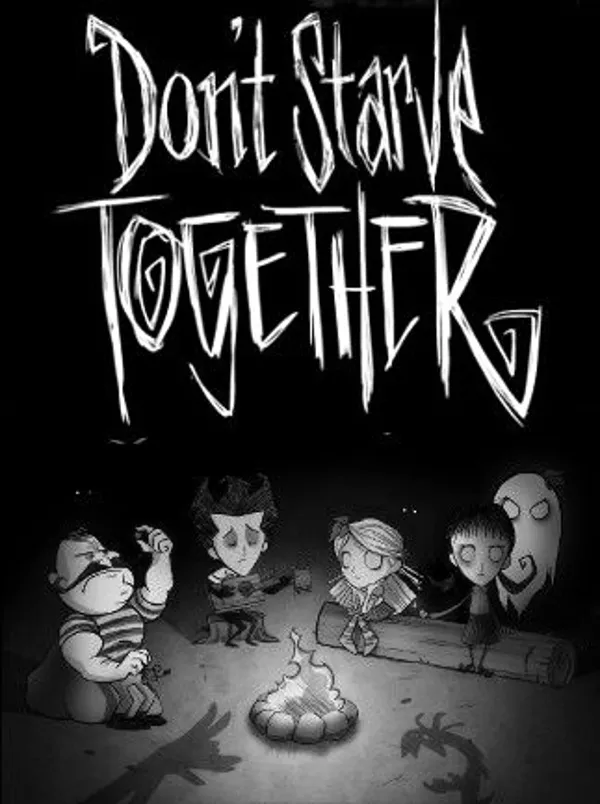

Team fortress 2
Team fortress 2
Team fortress 2
Team Fortress 2 (сокр. TF2; дословно с англ.?—?«Командная крепость 2») — компьютерная игра в жанре многопользовательского шутера от первого лица, разработанная и впервые изданная компанией Valve Corporation в 2007 году в составе сборника The Orange Box для Windows и Xbox 360; позднее в этом же году состоялся релиз игры в варианте для PlayStation 3; релиз самостоятельной версии игры для Windows состоялся в 2008 году. На территории СНГ игра издавалась компанией «Бука» в составе The Orange Box, а также в качестве независимого программного продукта (отдельный DVD-диск).
 Don't starve together
Don't Starve (с англ.—«Не голодай») — компьютерная игра в жанре action-adventure с элементами roguelike и выживания, разработанная и изданная канадской независимой командой разработчиков Klei Entertainment. Выпуск игры состоялся 23 апреля 2013 года на платформе для цифровой дистрибуции Steam.